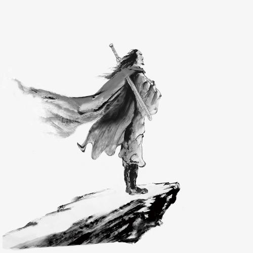

第八版
第八版

第一节（连载中）
火车哐当哐当驶向上海，像一把白晃晃的尖刀划破黑暗而来。
“哥，老爷子真要杀他？”豪华车厢里，一个女声软软地问道。
“对。”
“徐老爷子知不知道？”她似乎不大情愿。
“不知道，你不想杀？”
“他是个好人。”
“但他是个书生。”
“书生，那便杀了？”女子从软榻上坐了起来。
“杀吧。”哐当哐当，窗边的男人转过头来，目光炯炯有神。
窗外阳光明媚，火车的餐车里，宋教仁正在吃饭，他最近几场演讲非常成功，觉得春风得意，中国有救了。
“我去上个厕所。”餐车里，宋教仁起身，立了立领口。走到厕所，他看了看门没锁，便走了进去，反手锁上了门。
保镖小刀只得在外面等。
“小刀，你在外面等着。”宋教仁格外舒畅，喊得挺响。
“好的，宋先生。”
“哗啦哗啦…”宋教仁打开水龙头，准备洗手。但他猛地看到在水蒸气中模糊的镜子里映着个男人！
“你是谁？”宋教仁吓得不敢回头，“我可没看到你的脸。”
“我来杀你，宋先生。”男子穿着整齐的西服，冷冷地说道。
宋教仁还是不敢回头，更不敢看镜中的脸：“袁世凯派你来的？”
“不是。”
“什么，唔…”宋教仁感到腰间一镇疼痛！可男人一手捂住了他的嘴，他叫不出来。
“你…”宋教仁疼地回头，他却恐怖的看到自己的腰间血肉模糊，一双大手隔着层层衣服，生生地给自己肉里攥进去了一颗子弹！
“宋先生，你是个不错的政治家。”
“为什么？！”宋教仁疼地有点抽搐。“国家不能落到袁世凯手里，他是个野心家！”
“我没说我是袁世凯派来的。”男子凑到宋教仁耳边，把手张开，抚在血洞上，“火车到站后，会有一场袭击。我来杀你，但我会让你多活两天。宋先生，你不是袁世凯的对手，早晚会被他杀死，但要灭袁救国需要你的血！”
宋教仁捂着伤口转过身看着男子的眼睛：“你想做什么？”
“救国。”男人把双手插到口袋。
“我要是不答应呢？”
“那就等着下车后直接被袁世凯的兵打死。”男子站直了身子，低头看着宋教仁。
“我干嘛要相信你他敢杀我？”宋教仁发现这个男人比他高了半个头，却穿着小半号的西装。
“就因为国会在你手里，你就打定他不敢杀你？”男人直戳宋教仁的弱点，“三权分立是你弄出来的，袁世凯是你惹的，你把他搞得里外不是人，他不杀你，留着过年你请他吃饭吗？”男人又凑近了脸，看着宋教仁的眼睛。
“也是，他有枪。”
“不是！是、你、没、枪！”男人一字一顿。
“你为什么救我？”宋教仁感到一丝无望。
男人把手放在了宋教仁的肩膀上：“你是个好人，我知道。”
宋教仁“啪”一声拍掉了他手，转身“嘣”一拳打碎了镜子：“哈哈，好人，哈哈，所以我能多活两天？”他笑得有的抽搐，疼，直直地疼得他嘴角上扬。
“宋先生，你没事吧？”小刀在外面等了许久，却突然听到一声玻璃破掉的声音，有点紧张。
“没事！你先去叫车长，这镜子爆开了！”
小刀听到宋教仁的声音，放下心来：“哦哦，好！”
“你打算怎么救我我？”
男人看到宋教仁在洗手台上坐下，便靠到了门上：“小刀是来杀你的，他陪你下车站。”
“小刀？”宋教仁有点诧异。
对，你保镖”男人指了指外面，“袁世凯的人，下车站后他从背后杀你，其他车站上的人都留着假辫子，开枪给小刀提供机会。然后检查你有没有死透。”
“让小刀假装保护我？然后要我命？”
“对。”
“这个畜生！”宋教仁骂道，猛地拍了一下大腿，可突然他觉得不对，他看着大腿上的手，问：“这些，你是怎么知道的？你究竟是什么人？”
“宋先生，你要知道我并不想让你死，让你多活两天是我唯一能做的。”男人又站直了身子，“你吃完晚饭回车厢里，等餐车没人后，就让小刀到餐车取东西，之后我来当你保镖。”
“你要杀了我保镖？”宋教仁有些怀疑。
男人脱下西装：“宋先生，我要杀你的话，刚刚就会开枪了，你现在只能相信我。两天，还是能做许多事情的。把衣服换上吧！那腰里的子弹会在两天后才要你的命，你别把他取出来。”
男人把西装抛给了宋教仁，转身听了听门外，没有脚步声，说：“你这镜子打得不错。”便离开了。
宋教仁默默地苦笑了一声，被人告诉自己只有两天能活，他有些懵。
宋教仁摊开报纸，说：“小刀，我想起了我的眼镜还在餐车里。你去帮我拿一下。”
“哦，好。那宋先生你待在车厢里别动啊，火车危险多。”
宋把不目光移开，看了看小刀笑道：“我会当心的。”
“眼镜、眼镜”小刀走到餐车，“要求还真够多的。”
“小刀！”
那保镖回头，“陈先生！你怎么来了？”保镖有点恭敬又有点兴奋。
“袁公让我来看看。”
“哎呀，不用不用，小的保证万无一失。”小刀笑得有点谄媚。
“小刀，你过来。”那男人把手勾上小刀的肩膀，小刀有点激动，有点心花怒放，嘴角上扬的都有点僵硬。
“咔啦”男人闪电般的折断了小刀的脖子，驾着他走到了末节车厢外面，丢了出去。飞了好远，小刀才趴拉在了泥地上，脸上的笑终于永远地僵硬了。
“哗啦。”男人走进了宋教仁的车厢。昏暗的车厢里，黄光轻柔地照在墙纸上，宋教仁躺在白黄色的沙发里，看着报纸，一身正装。
“挺暖和的哈。”
“你跟一个人还有两天可活的人就这么说话的吗？”宋教仁瞄了一眼，继续看报纸。
“你怕了？”
宋教仁“刷”地一声合上报纸，莫名生气：“老子什么时候说我怕了！”
“袁世凯盯你死死的了，一次不行，会有两次，三次，我也没办法。”男子坐到床边。
“下去。”宋教仁站了起来，“这是我的床，你坐地上去！”
“哈哈！你还真生气了！”
“你他娘的又不要死！”宋教仁破口骂道。
男子往地上一坐，有些严肃，他看看宋教仁示意他坐下：“你死后，袁世凯也完了。”
“啊？什么意思。”他有点糊涂，“他袁世凯北洋军从小站那时候可就开始扬名天下了！”
“所以你斗不过他呢。但是，”男人从怀里掏出一张照片，“两日后，你会因为这子弹中毒身亡，你死后，袁世凯肯定称帝。他一称帝，共和派就会群起而攻之。”
宋教仁接过男子手里的照片，眼睛瞪得有点大：“你他派来的？”
“我没说过我是谁的人，那么我就谁的人都不是，你不是一直好奇我是谁吗？”男子看了看宋教仁手里的照片，“留日的时候，我也是士官学校的，我会去帮他联合其他共和派的人。”
宋教仁似乎认了命，把照片往桌上啪：“好！那就由我把袁世凯拉到地底下去吧！”
“先生大义。晚辈在此谢过。”男子正要起身，宋教仁问道：“万一袁世凯忍住不要做皇帝呢？”
那男子笑道：“那你到时候发封电报给袁世凯，就说‘中国未来就靠他了。’”
宋教仁也笑了，经不住地看着男人：“未来就看他了，好好好，妙啊，哈哈哈！哈哈哈！”他笑得有点大声，看着那男子也又有点笑意，不禁笑得更大声了。
“才人辈出啊！”
“仰赖先生大义！”
1913年3月20日，三封电报分别穿到了袁世凯，孙文，蔡鄂的桌前“宋教仁已死。”
3月21日，宋教仁委托黄兴发电报于袁世凯：
“今国本未固，民福不增，遽尔撒手，死有余恨。伏冀大总统开诚布公道，竭力保障民权，俾国家得确定不拔之宪法，则虽死之日，犹生之年。”
3月22日，宋教仁在医院不治身亡，电报全国，举国哀悼。